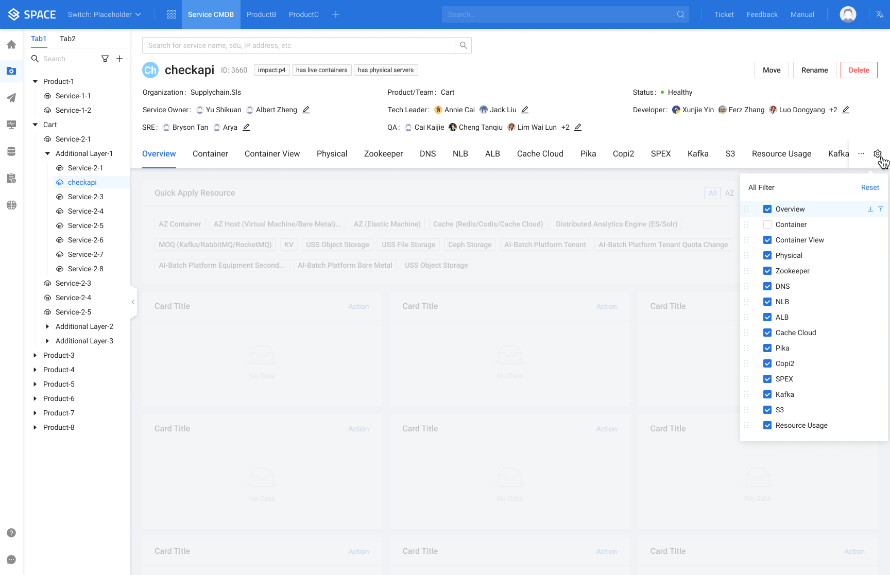
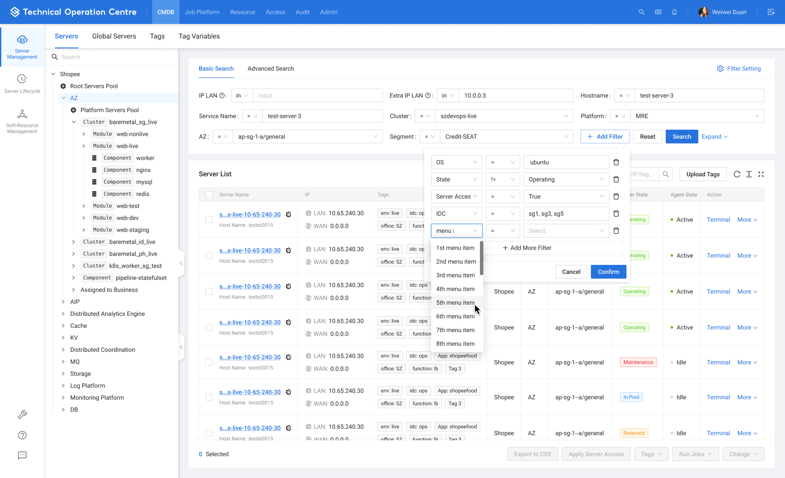

01 / 先看整个工程世界
先看整个工程世界，再进入两个具体问题
这篇文章以 Service CMDBSpace 平台内「服务身份和交付」产品线的子产品：管理服务与资源绑定。一个开发可能负责多个子团队的 N 个服务，权限越大服务树越复杂。 和 Server CMDBTechnical Operation Centre（TOC）下管理服务器的子产品：SRE 管理海量服务器，每个筛选条件由「字段＋运算关系＋取值」三字段组合。 两个典型产品为例，展开我怎样理解业务、组织页面，并把判断交给团队继续使用。平台上同时工作着几类不同的人：普通业务研发关注自己的服务，业务 SRE 负责相应服务器的运行，平台 SRE 提供底层资源与平台能力。同一个平台，在不同角色眼里是不同世界。
蓝色 ↗ 展开设计案例 灰色 平台其他产品
Application Management（应用管理）
服务归属、交付与配置
Application Traffic（应用流量）
访问、路由、发现与互联
Resource（资源服务）
计算、数据与中间件支撑
Compute（计算）Database（数据库）Network（网络）
地址、设备、策略与连通性
AI Infra（AI 基础设施）
Agent 运行等基础能力
Observability（可观测性）
观察运行、调查故障
Governance & Workflow（治理与工作流）
身份、访问和操作流程
Infra Process（基础设施流程）
灾备、资源规划与容量
Server & AZ（服务器与可用区）
服务器、作业与地域上下文
我从零理解这个体系的过程，写在思考栏的 《把体系的复杂度，组织成页面上的秩序》 里。这里不再复述，直接看平台上的两个具体问题。
02 / 多层结构，与可让出的空间
Service CMDB：理清多层结构，给实际工作留出空间
页面最怕的不是放不下，是迷路
权限越大，服务树越复杂。一个开发者可能管着好几个子团队的许多服务；点进任何一个，下面又挂着容器、物理服务器、网络、缓存。页面最怕的不是放不下，是迷路——切出去再回来，还得认得自己在哪。
所以我把入口分开：导航管去别的产品，服务树管定位，页头留着服务是谁的，资源页签展开这个服务挂了多少东西。哪些一直可见、哪些按需展开，分清楚，页面才不乱。
空间也是挤出来的。导航可以随时呼出；往下滚，页头收起次要信息，服务名和资源入口留下；内容要更宽，服务树也可以收起来，入口还在。资源页签让用户自己选、自己排——每个人盯的东西不一样，常用的就该在前面。
同一个页面，四种工作状态



总览给判断，明细给依据
资源总览先给整体用量，再往下拆到服务和部署单元。常用、最近用过的、自己维护的，各有各的入口：从熟的地方进，或者从资源情况反着找要盯的服务，都行。

进到具体服务，容器资源把当前使用、已部署、配额和近期峰值分开，再拆到子服务；物理服务器留下数量、类型、用量和成本变化。两个资源页是同一个阅读顺序——先总览、再拆解、再明细——但指标各留各的，不硬套。一个使用率解释不了所有资源，界面得给人继续核对的依据。
03 / 专业查询，与自己的习惯
Server CMDB：查询足够专业，也能按自己的习惯使用
只选一个字段，等于话没说完
TOCTechnical Operation Centre（TOC），服务器运维中心：Server CMDB 是它下面的子产品，通过对象树、环境选择和字段筛选找到服务器并执行批量操作。 里，SRE 手里是海量服务器。找机器可能从 IP、主机名、集群、地域、状态、标签开始，一条条件里，字段、运算关系、取值三样合起来才算说完整——只选一个字段，等于话没说完。
所以我留常用条件，也留临时追加的口子：眼前的查找，加一条就够了，不用把什么字段都常年摆在页面上。
每个人常查的线索还不一样。定制表单拆成三步：选字段、调顺序、预览。临时加条件，管眼前这次；配置常用表单，管以后每次。两个操作也不混：Add Filter用字段、运算关系与取值组合出的查询条件：Add Filter 给当前查询补条件，Filter Setting 定制常用表单。 是给当前查询补条件，Filter Setting 是给自己定常用表单。


找到机器只是开始
服务器树给范围，查询缩小集合，列表摆出名称、地址、标签、归属、状态。进详情，基础属性、标签、系统、位置、归属分区放，一路能查下去。

单台的操作就近放在行内，更多的按类展开；选中多台，底部集中亮出选了哪些、能干什么。找、看、做，在同一个上下文里接上——使用者始终知道手里是这一批。

04 / 每个产品，一个问题
更多产品中的具体设计
这些工作不只在两个 CMDB 里。网络、计算、观测和资源交付的产品，也各有各的页面问题。下面大致挑选了一些来自不同产品的界面——不追求每个产品最有代表性的画面，只是尽量选得互不雷同。按产品名切换。
更多产品的代表设计
SMS · 服务运行
部署信息、实例状态和下一步接在一起。

Cache Cloud · 缓存管理
弹性 Redis 的创建与规格配置。

网络策略 · 复杂表格
密集表格里，来源/目标、允许/拒绝、是否启用分开读。

05 / 判断沉淀为设计基础
把做过的设计，变成别人能够接着做的基础
两个 CMDB 里的取舍，加上其他产品里那些判断，慢慢沉淀成设计依据、业务组件把业务规则封装进可复用的界面组件，让协作规则在后续设计中继续被使用。和页面结构，后面项目接着用。团队怎么把这些接过去，写在 《带团队，就是让工作有人接得住》 里。这里就落一句话：
设计基础扎不扎实，要看新需求进来时，团队能不能看懂已有的选择，并有依据地往下做。
相关文件涉及企业内部信息，可在面试交流中结合脱敏处理后的材料展开介绍。